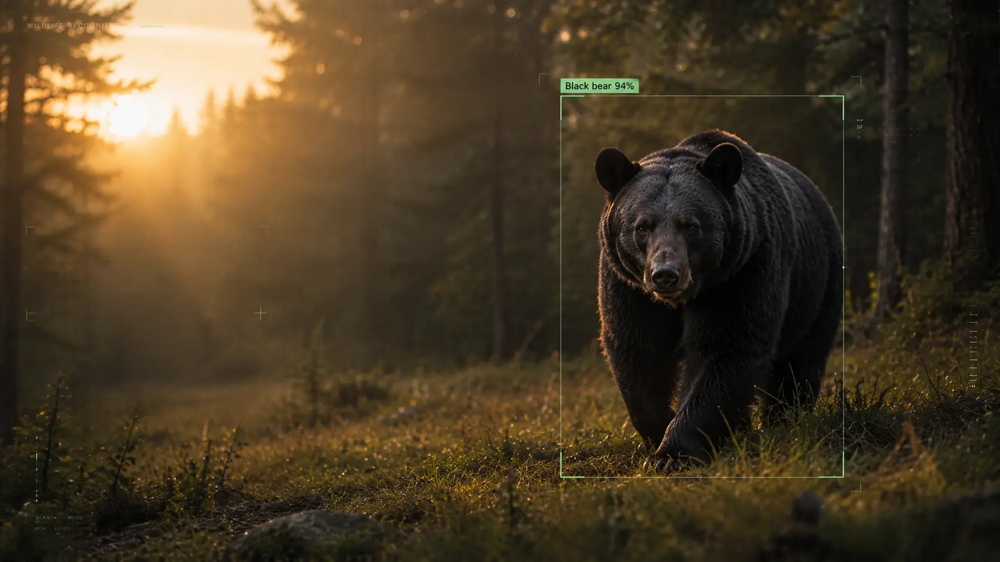
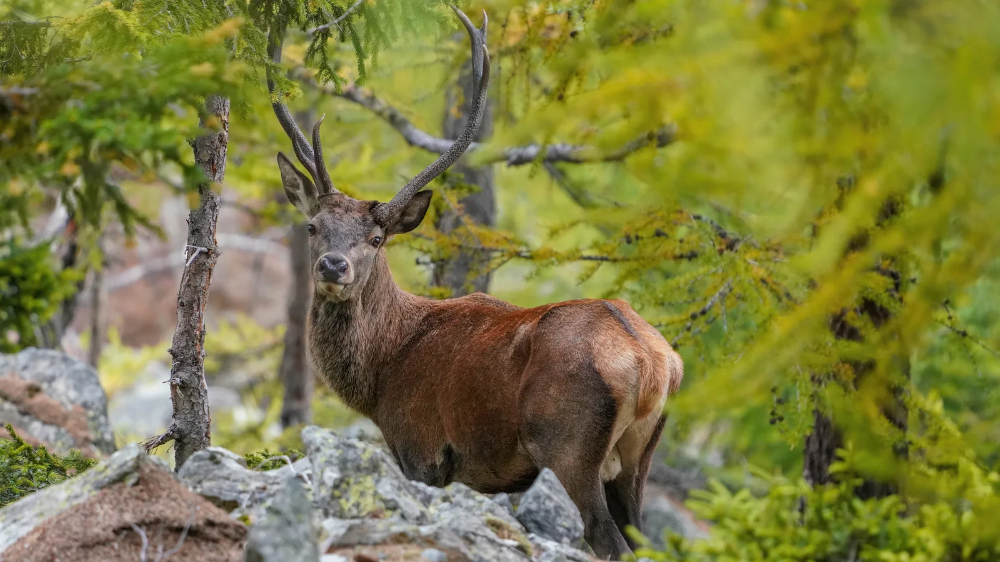
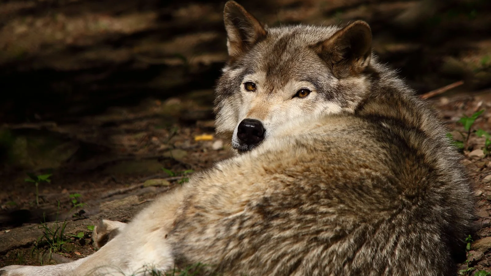
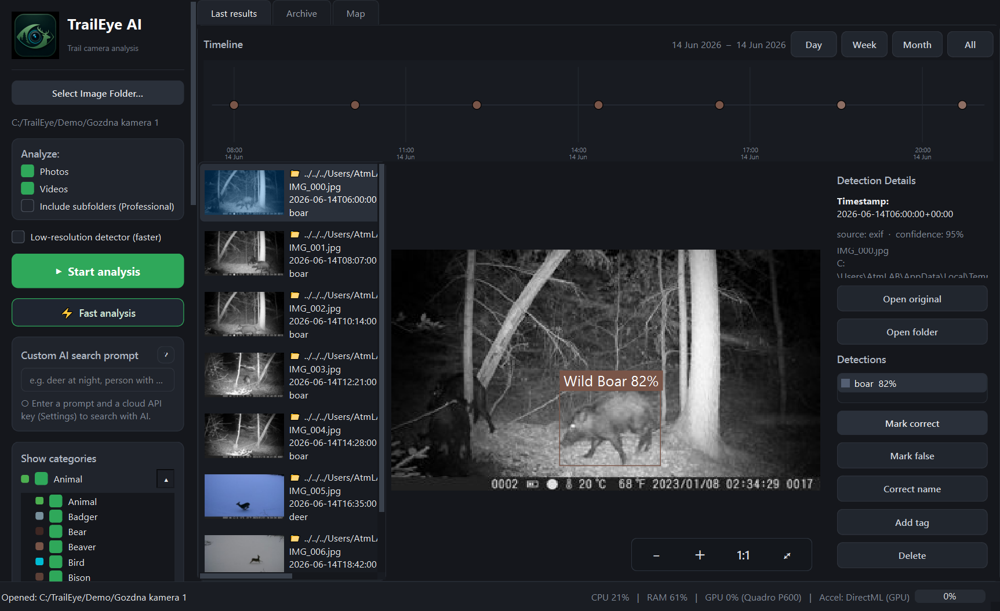

Animal, person & vehicle detection
Automatically surface likely events before detailed review so empty or irrelevant frames do not consume your time.

TrailEye AI detects animals, people and vehicles, identifies supported wildlife species, recovers timestamps and turns thousands of photos and videos into timelines, heatmaps, statistics, maps and exportable reports.
The redesigned homepage now reflects the actual Windows software: reviewable AI detections, time and location context, activity analytics and field-ready exports.
Automatically surface likely events before detailed review so empty or irrelevant frames do not consume your time.
Refine animal detections with TrailEye's 38-species prediction library, then confirm, reject or relabel the result.
Read burned-in trail-camera date/time overlays with OCR, with EXIF and file timestamps available as fallback context.
Keep original media, detection confidence, predicted species, timestamp and event context together in one workflow.
Analyze mixed seasonal archives from ordinary folders instead of separating still images and video clips into different tools.
Export CSV, Excel, selected images and PDF reports for hunters, landowners, researchers, clubs or management records.
TrailEye converts reviewed detections into visual activity patterns so you can move from a folder full of media to an evidence-based view of species activity.

Explore observations by species, hour and day instead of manually counting sightings in spreadsheets.

View manually placed camera sites or use photo GPS where available, then compare activity by location rather than treating every camera folder as one anonymous archive.

Camera-trap conditions vary by species, season, distance, illumination and camera model. TrailEye keeps AI classifications reviewable so you can confirm, reject or correct uncertain results.
From European forests to North American hunting ground, TrailEye's workflow is designed around real trail-camera archives and supported wildlife recognition.




Point TrailEye at copied trail-camera photos, videos or a seasonal folder tree, depending on your edition.
Detect events, predict supported species and recover time context while your archive remains under your control.
Correct classifications, filter by species or camera site, inspect heatmaps and statistics, then export the results you need.
Review seasonal cameras faster, compare activity by time and location and share selected findings without uploading private land imagery to a mandatory cloud service.
Explore hunter workflow →Triage field-camera datasets, retain human validation, recover timestamps and export reviewed results into downstream research workflows.
Explore research workflow →Turn thousands of backyard, forest or reserve camera files into searchable sightings, species timelines and meaningful activity patterns.
Start with Free →No invented SaaS plans: these are the editions currently documented for TrailEye AI.
Download the permanent Free edition for Windows and test TrailEye on your own photos and videos before choosing a paid licence.